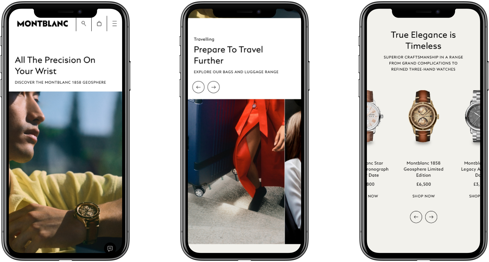
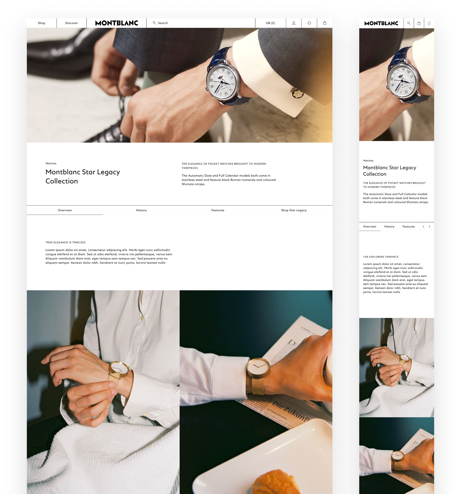

Elevating e-commerce within a platform constraint
Montblanc partnered with YOOX Net-A-Porter to elevate their e-commerce experience. While the partnership provided scale and infrastructure, it also imposed strict CMS templates and technical constraints. The challenge was to create a distinctly Montblanc experience without breaking the rules of the platform.
How do you deliver a premium, bespoke brand experience inside a shared e-commerce platform designed for many brands?
• Fixed YOOX CMS templates and interaction patterns
• Limited flexibility in layout and navigation
• Performance and platform guidelines that restricted custom behaviour
• Close dependency on YOOX engineering decisions
We worked in close collaboration with Montblanc stakeholders and YOOX engineers using frequent check-ins to test ideas against platform constraints early. Rather than fighting the system, we focused on identifying where flexibility existed and pushing those areas deliberately.

Early exploration focused on three key questions:
• How can we encourage product discovery within a rigid navigation system?
• How do we express Montblanc's updated brand direction without fragmenting the platform?
• Where can motion and interaction add value without compromising performance?
These questions guided design decisions throughout the project.
Users needed a clearer sense of Montblanc's full product range, but default navigation patterns were limiting exploration.
We introduced a side-panel navigation that expanded progressively, making better use of screen real estate while remaining compliant with YOOX guidelines. Micro-interactions were carefully designed in collaboration with engineering, testing hover versus click behaviours to balance usability across devices.
Luxury products rely heavily on materiality and detail, which are difficult to communicate through static templates.
We prioritised rich product imagery and immersive content, incorporating video and 3D elements where supported. This helped bridge the gap between physical and digital browsing, allowing users to explore craftsmanship and form without visiting a store.

The site needed to feel distinctly Montblanc while operating within YOOX's standardised CMS.
By working closely with developers, we identified edge cases where the CMS could support more advanced behaviour. Subtle motion, crafted transitions, and refined spacing allowed the experience to feel bespoke without sacrificing performance or maintainability.
The result was a refined, durable e-commerce experience that respected platform constraints while elevating Montblanc's brand presence. The site balanced elegance with usability, improved product discovery, and delivered a consistent experience across devices — proving that strong brand expression is possible even within highly structured systems.